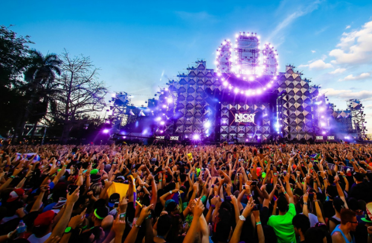

DJ - Melody from heaven.mp3
04:51
Dragon Rider.mp3
01:53
Enya - Amarantine.mp3
03:12
Era - The Mass.mp3
03:41
暂无歌词
敬请期待
00:00
00:00
电台
排行榜
随意听
MV专区
私人音乐
为您推荐
login
regist
热门搜索
更多
流行
摇滚
嘻哈
刘德华
经典
民谣
那英
英文
周杰伦
旅行
安静
夜店
薛之谦
红歌

本周排名
更多
1.马頔 - 南山南
1112145
2.林志炫 - 没离开过
1043225
3.梁静茹 - 问
933145
4.李荣浩 - 模特
916345
5.那英 - 默
700005
6.谭咏麟 - 情义两心知
189895
7.谭咏麟-像我这样的朋友
123145
8.朴一泽 - 寻找铁达尼
123213
9.戚薇袁成杰-外滩十八号
123213
10.My Heat Will Go On
123213
11.孙露 - 离别的车站
23213
12.斯琴高丽、顾峰 - 猜
13213
13.宋冬野 - 斑马,斑马
12213
取消
账号
密码
忘记密码
登录
取消
设置账号
设置密码
设置密码
注册